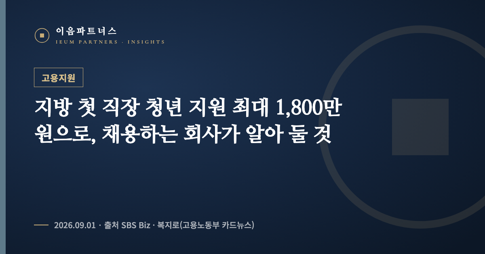

지방 첫 직장 청년 지원 최대 1,800만 원으로, 채용하는 회사가 알아 둘 것

지방에 있는 중소기업은 청년을 뽑고 오래 붙잡아 두기가 쉽지 않습니다. 정부가 2026년 9월 1일 국무회의에서 의결한 2027년 고용노동부 예산안에는 지방 중소·중견기업에 취업해 일하는 청년에게 주는 지원을 크게 늘리는 내용이 담겼습니다(SBS Biz). 이 글에서는 무엇이 늘어나는지, 채용하는 회사 입장에서 무엇을 알아 두면 좋은지 정리합니다.
이 지원은 청년이 받는 돈이지만, 2026년 제도 기준으로는 회사가 먼저 사업에 참여해야 청년도 근속 지원을 받을 수 있어 채용 계획과 함께 봐야 합니다. 우리 회사가 참여 요건을 갖췄는지 궁금하다면 카카오톡 채널 이음파트너스에서 함께 확인해 볼 수 있습니다.
무엇이 늘어나나
현재 청년일자리도약장려금은 비수도권에 취업한 청년에게 2년간 최대 720만 원을 지원합니다. 2027년 예산안은 이를 최대 1,800만 원으로 늘리고, 수도권에 취업한 청년도 최대 480만 원을 받을 수 있도록 범위를 넓혔습니다.
| 구분 | 내용 |
|---|---|
| 비수도권 취업 청년 | 2년간 최대 720만 원(현재) → 최대 1,800만 원(2027년 예산안) |
| 비수도권 우대지역 | 지역에 따라 2년간 1,440만~1,800만 원 |
| 수도권 취업 청년 | 최대 480만 원 |
| 확정 시기 | 국회 심의·의결을 거쳐 2026년 말 확정 |
왜 회사에도 중요한가
정부는 “지방 중소기업의 낮은 초임이 청년의 지방 취업을 꺼리게 하는 요인”이라고 보고 있습니다(SBS Biz). 정부 조사에서 청년이 중소기업에 바라는 월급은 300만~350만 원 수준이었지만 실제 초임은 약 220만 원이었고, 정부는 여러 지원을 합쳐 지방 중소기업 취업 청년에게 취업 초기 2년 동안 월 최대 100만 원 안팎의 지원 효과가 나게 한다는 계획입니다.
정부 지원이 더해지면 청년이 체감하는 소득이 늘어날 수 있다는 점은 채용 공고나 면접에서 설명할 만한 내용입니다. 다만 아직 예산안 단계라 최종 금액과 요건은 바뀔 수 있으니, 확정 내용을 확인한 뒤 안내하시길 권합니다.
2026년 기준, 회사가 먼저 할 일
2026년 청년일자리도약장려금은 청년을 정규직으로 채용해 6개월 이상 고용을 유지한 회사에 최대 720만 원을 지원하고, 비수도권에서는 근속한 청년에게도 근속 인센티브를 줍니다. 회사는 청년을 채용하기 전에 미리 사업 참여를 신청해야 하며, 참여 신청 이전 3개월 안에 채용한 청년까지만 해당됩니다(고용노동부 카드뉴스). 신청은 회사가 직접 하고, 지원 여부와 금액은 고용노동부와 운영기관 심사로 정해집니다.
대표님이 지금 확인할 것
- 2027년 청년 정규직 채용 계획이 있는지, 시기와 인원을 정리했는지
- 우리 회사가 5인 이상 우선지원대상기업이거나 산업단지 입주 중견기업인지
- 채용 전에 고용24에서 사업 참여 신청을 먼저 해야 한다는 점을 담당자와 공유했는지
- 국회에서 확정된 2027년 예산과 세부 공고를 확인할 담당자를 정했는지
참고한 자료
- 첫 직장 지방이면 최대 1800만원…청년 취업 지원 확대 [2027 예산안] — SBS Biz (2026.09.01)
- 2026년 청년일자리도약장려금 한눈에 알아보기 — 복지로(고용노동부 카드뉴스) (2026.03.27)
지방에서 청년 채용 계획을 세우고 있다면 카카오톡 채널 이음파트너스로 편하게 물어봐 주세요.
※ 이 글은 일반적인 정보 제공을 위한 것으로, 개별 사안은 세무사·노무사 등 전문가와 함께 확인하시기 바랍니다.